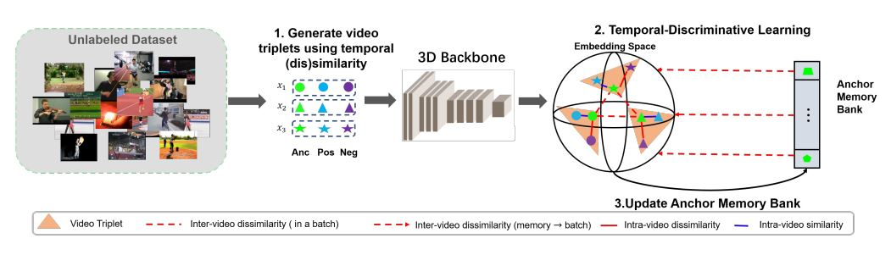

In contrast to CVRL, TDL works on temporal triplets. It looks
into the temporal dimension of a video and targets them as
unique instances. The anchor and positive belongs to same
temporal interval and has a high degree of resemblance in
visual content compared to the negative.
More details can be found
here.

Framework of the proposed Video-based Temporal-Discriminative Learning, which includes three steps in one iteration: Step 1) Generating temporal
triplets for each video in a training batch; Step 2) Self-supervised learning with Temporal-Discriminative Loss for temporal-discriminative feature extraction
with a 3D Backbone Network; Step 3) Updating Anchor Memory Bank with anchor features in each training batch. (Lines in red denote dissimilarity while
lines in blue denote similarity. This figure is better viewed in color.)